The Announcer dropped from the sky and landed with a metallic THUNK in the middle of an open field.
"Attention. Six new contestants have been selected for a special competition. You are not replacing the original cast. You are... extras."
"EXTRAS?!"Pretzel shouted, already offended. "I am NOT an extra. I'm clearly the main character. Look at me. I'm literally the most complex shape here."
Sticky Note bounced over, already sticking to Pretzel's side. "Ooh! Ooh! Are we on TV? Is this real? I wrote down my goals for today — look!" He turned around to show the messy writing on his back: 1. Make friends. 2. Win. 3. Don't get stuck to anything embarrassing.
"You're already stuck to me," Pretzel said flatly.
Battery rolled her eyes. "Can we just hear what the challenge is? Some of us don't have all day. I'm at eighty-seven percent and dropping."
Marble sat quietly at the edge of the group, watching everyone. She noticed that Compass kept glancing toward the south, her needle twitching nervously. And Acorn — the smallest one — was standing perfectly still, trying very hard to look tall.
Page 2
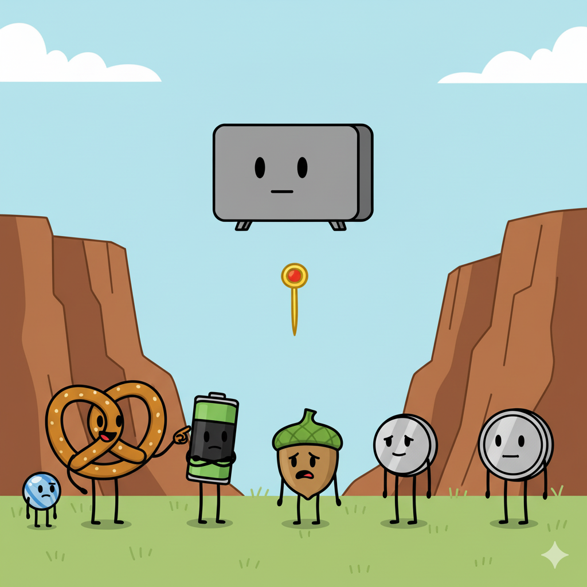
"Your challenge," the Announcer continued, ignoring all of them, "is to find the Golden Pin. It is hidden somewhere inside Goiky Gulch — a canyon system to the south. The first contestant to find it and bring it back here wins immunity. Everyone else faces elimination."
"Wait — EVERYONE else?"Acorn squeaked. "That's five out of six people getting eliminated?!"
"No. Everyone else faces a vote. ONE will be eliminated. I just wanted to scare you."
"That's MESSED UP,"Battery muttered.
Compass's needle swung south instantly. "Goiky Gulch is that way. I can feel it. About two miles, through the meadow, past the old Yoyle sign."
Everyone stared at her.
"What? I'm a compass. It's literally what I do."
Pretzel cracked his knuckles (which made a weird crunching sound, because he was a pretzel). "Alright team. Follow ME. I have a plan."
"We're not a team," Battery said. "This is every contestant for themselves."
"Fine. Follow me ANYWAY."
Page 3
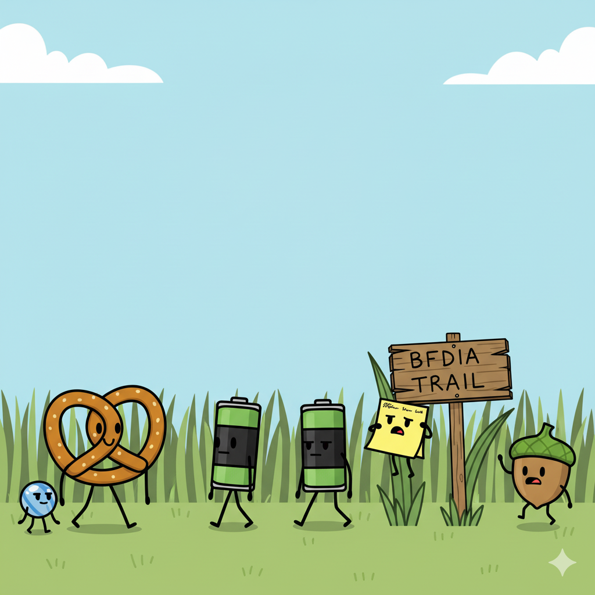
The six contestants walked through the meadow toward the canyon. The grass was tall — taller than Acorn, who had to jump to see over it.
"This is ridiculous," Acorn grumbled, hopping through the grass like a tiny bouncing ball. "Why does everything in Goiky have to be oversized?"
"Because YOU'RE undersized,"Pretzel said, not even looking back.
Sticky Note was having his own problems. Every few steps, he'd stick to a blade of grass and have to peel himself off. "OW. OW. OW. Okay, new rule — I need to stay on the path. Is there a path? COMPASS, IS THERE A PATH?"
Compass checked her needle. "There's a trail about forty feet to the left. It looks like old contestants used it during Season 2."
"How do you know that?"Marble asked quietly. It was the first thing she'd said all day.
"The ground is worn down in a line. And there's a faded sign that says 'BFDIA TRAIL — EPISODE 5.' I just... notice things."
Marble stared at Compass. "Me too," she said softly. And for the first time, Compass smiled.
Page 4
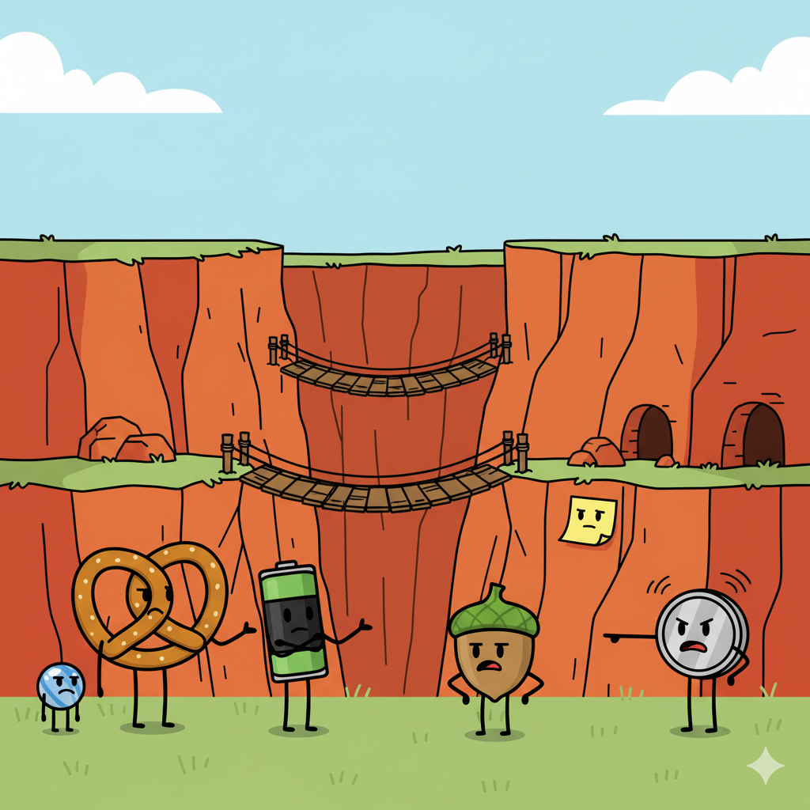
They reached the edge of Goiky Gulch and stopped. It was enormous — a deep canyon with orange and red rock walls that stretched down into shadow. Rickety wooden bridges connected one side to the other at various levels. Strange echoes bounced off the walls.
"Well,"Battery said. "That's terrifying."
"It's BEAUTIFUL,"Sticky Note gasped. He immediately stuck himself to the canyon wall to get a better look and had to be pulled off by Pretzel.
"Okay, here's my plan,"Pretzel announced. "We split into pairs. Cover more ground. Compass and I will take the main path down the center. Battery and Acorn, you take the left ridge. Marble and Sticky Note, you take the right."
"Why do YOU get to decide?" Battery demanded.
"Because I have a plan. Do YOU have a plan?"
Battery opened her mouth. Closed it. "...Fine. But if your plan gets us lost, I'm blaming you at elimination."
Marble tugged on Sticky Note's corner. "Come on. The right ridge has more caves. If I were hiding something, that's where I'd put it."
Sticky Note beamed. "You're SO smart, Marble! I'm writing that down!" He scribbled on himself: Marble = smart. Caves = right.
Page 5
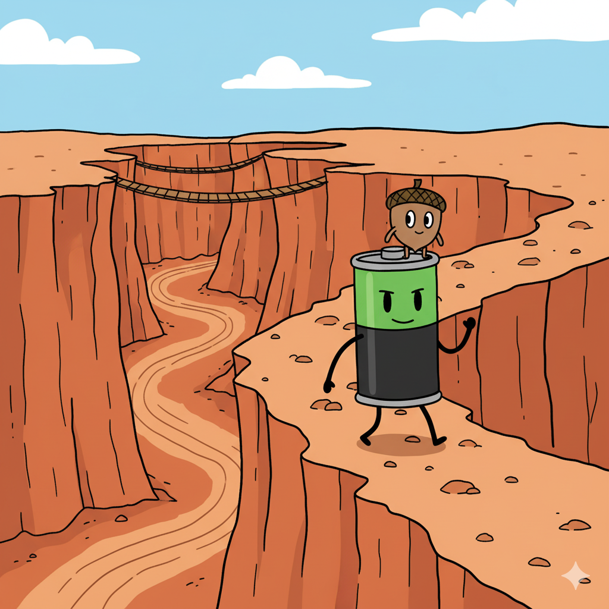
Battery and Acorn took the left ridge path, which was narrow and crumbly. Battery walked confidently — she was solid and heavy enough not to wobble. Acorn, being light and round, kept almost rolling off the edge.
"Could you SLOW DOWN?" Acorn called.
"Could you speed up? I'm trying to win here."
"I'm trying to NOT DIE here!"
Battery stopped. She looked at Acorn — really looked at him. He was trembling, his little green cap rattling. The path was barely wider than he was tall.
Something in Battery softened. She walked back, crouched down, and held out her hand. "Get on my shoulder. I'll carry you until the path widens."
Acorn blinked. "Really?"
"Really. But don't tell Pretzel. I have a reputation."
Acorn climbed up and sat on Battery's positive terminal. From up there, he could see the whole gulch spread out below — paths weaving through the rock, shadows hiding secrets, and somewhere down there, a golden pin waiting to be found.
"Whoa," Acorn breathed. "I've never been this high up before."
"Get used to it, small fry. We've got ground to cover."
Page 6
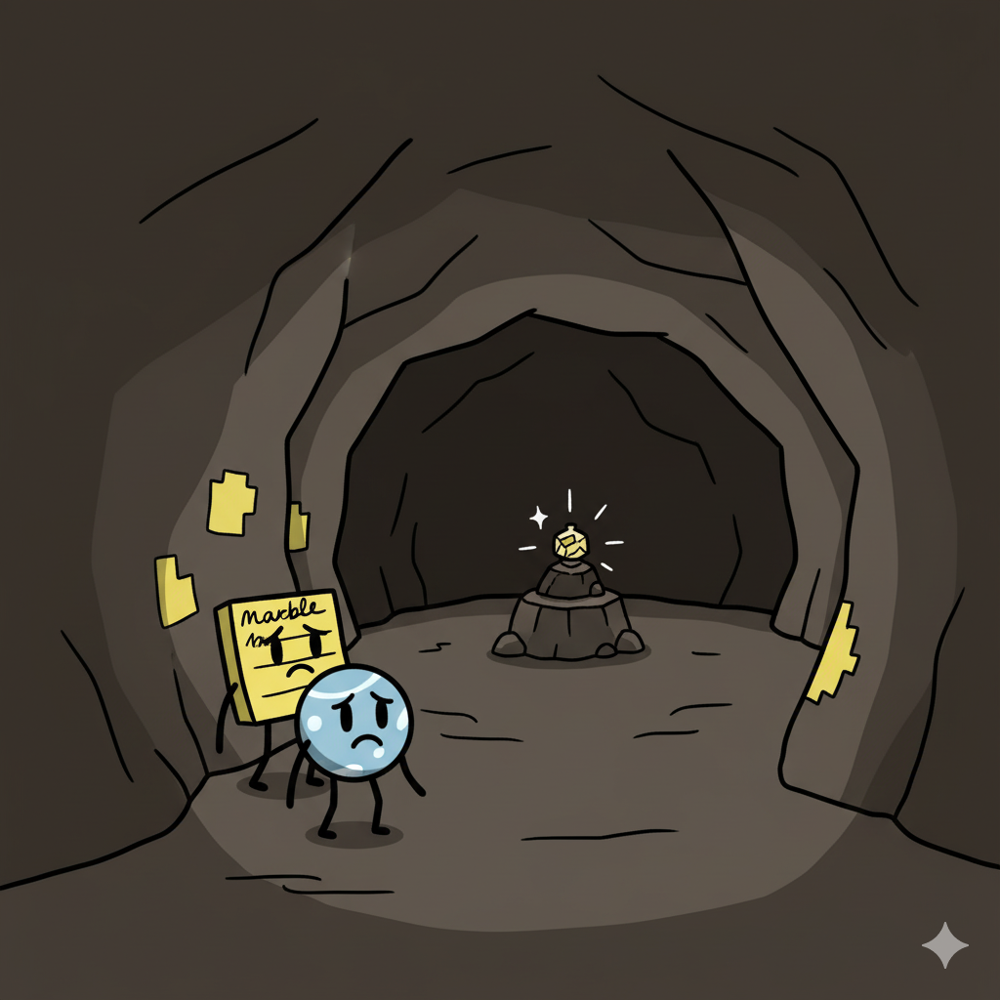
Meanwhile, Marble and Sticky Note explored the caves on the right ridge. The caves were dark, and their footsteps echoed in strange ways.
"It's creepy in here," Sticky Note whispered. Then, louder: "I LOVE IT!"
"Shh," Marble said. "Listen."
They both went quiet. Deep in the cave, there was a faint sound — like wind chimes, or metal tapping against rock.
"That could be the pin," Marble whispered. "Metal on stone."
"Or a GHOST," Sticky Note said cheerfully.
"There are no ghosts in BFDI."
"There's a literal number Four who can kill people with his voice. Ghosts are not that weird."
Marble couldn't argue with that. They crept deeper, following the sound. The walls narrowed until they had to walk single file. Marble rolled smoothly along the floor — being a sphere had its advantages. Sticky Note kept getting stuck to the walls and ceiling, leaving little yellow patches behind him like breadcrumbs.
"At least we can find our way back," Marble said, looking at the trail of yellow.
"SEE? Getting stuck to things is a SUPERPOWER. I've been saying this for YEARS."
Then Marble stopped. Ahead, the cave opened into a wide chamber, and in the center, on a rock pedestal, something glinted in the dim light.
Page 7
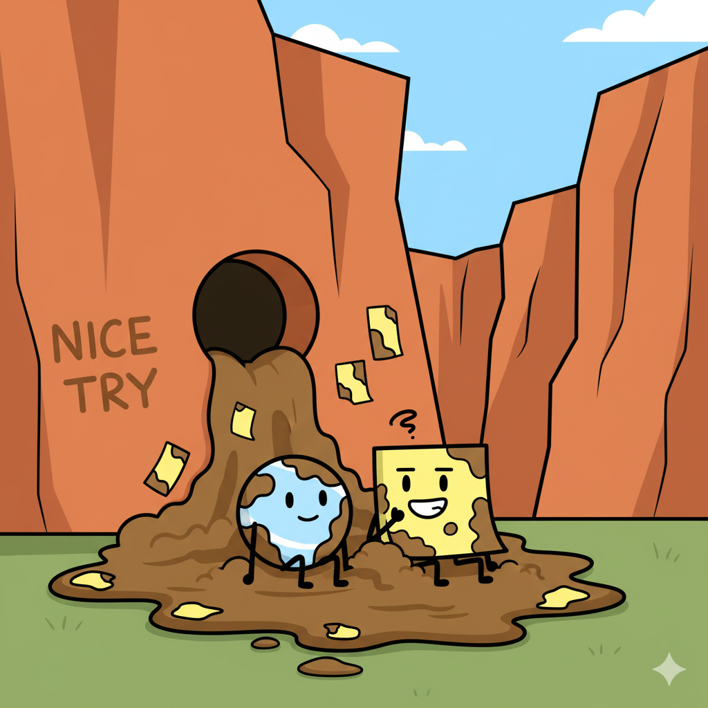
"THE PIN!"Sticky Note screamed, lunging forward.
"WAIT—" Marble tried to stop him, but Sticky Note was already across the chamber. He grabbed the shiny object off the pedestal and held it up triumphantly.
It was a thumbtack. Just a regular silver thumbtack.
"That's... not the golden pin,"Marble said.
Then the cave started rumbling. The pedestal sank into the floor, and from the walls, panels slid open revealing a message carved in stone: NICE TRY. — THE ANNOUNCER.
The floor tilted. It was a trap — a slide! Marble and Sticky Note went tumbling down a smooth stone chute, screaming the whole way (Sticky Note stuck to the sides three separate times and got peeled off by the momentum). They shot out of the bottom and landed — SPLAT — in a mud pit at the bottom of the gulch.
Sticky Note sat up, completely covered in mud. "That. Was. AWESOME."
Marble wiped mud from her eyes. "That was a decoy. The Announcer put fake pins in the caves to trick people."
"So the real pin ISN'T in a cave?"
"No. Which means we've been looking in the wrong place." Marble's mind was racing now. "We need to think like the Announcer. Where would HE hide something?"
Page 8
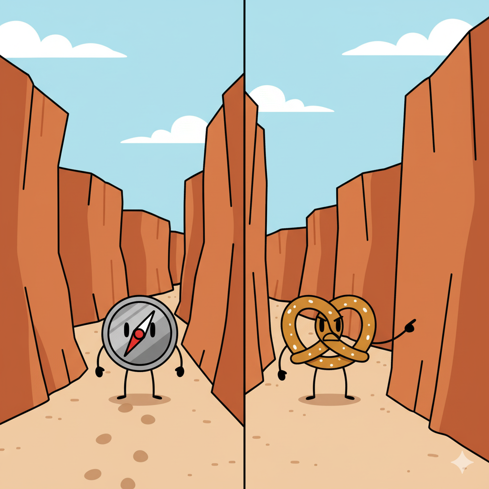
On the main path, Pretzel and Compass were making good progress — until they hit a fork in the trail.
"Left," Compass said firmly. Her needle was pointing left.
"Right," Pretzel said, equally firm.
"My needle says left."
"My GUT says right. And my gut has never steered me wrong."
"You're a pretzel. You don't have a gut."
"It's a FIGURE OF SPEECH, Compass!"
They argued for three full minutes. Finally, Pretzel marched off to the right. Compass watched him go, sighed, and followed her needle to the left.
Pretzel's path led to a dead end — a sheer cliff face with no way forward. He stared at it for a long time. Then he turned around and walked back to the fork. Compass was gone.
"Fine," Pretzel muttered to himself. "She was right. The compass was right. BIG SURPRISE."
He swallowed his pride and followed her trail — footprints in the dust, leading left and down, deeper into the canyon. Being wrong wasn't something Pretzel was used to. But as he walked, a small, uncomfortable thought formed in his pretzel brain: maybe being the leader didn't mean always being right. Maybe it meant knowing when to listen.
He shook it off. "Nah. I'm still definitely the main character."
Page 9
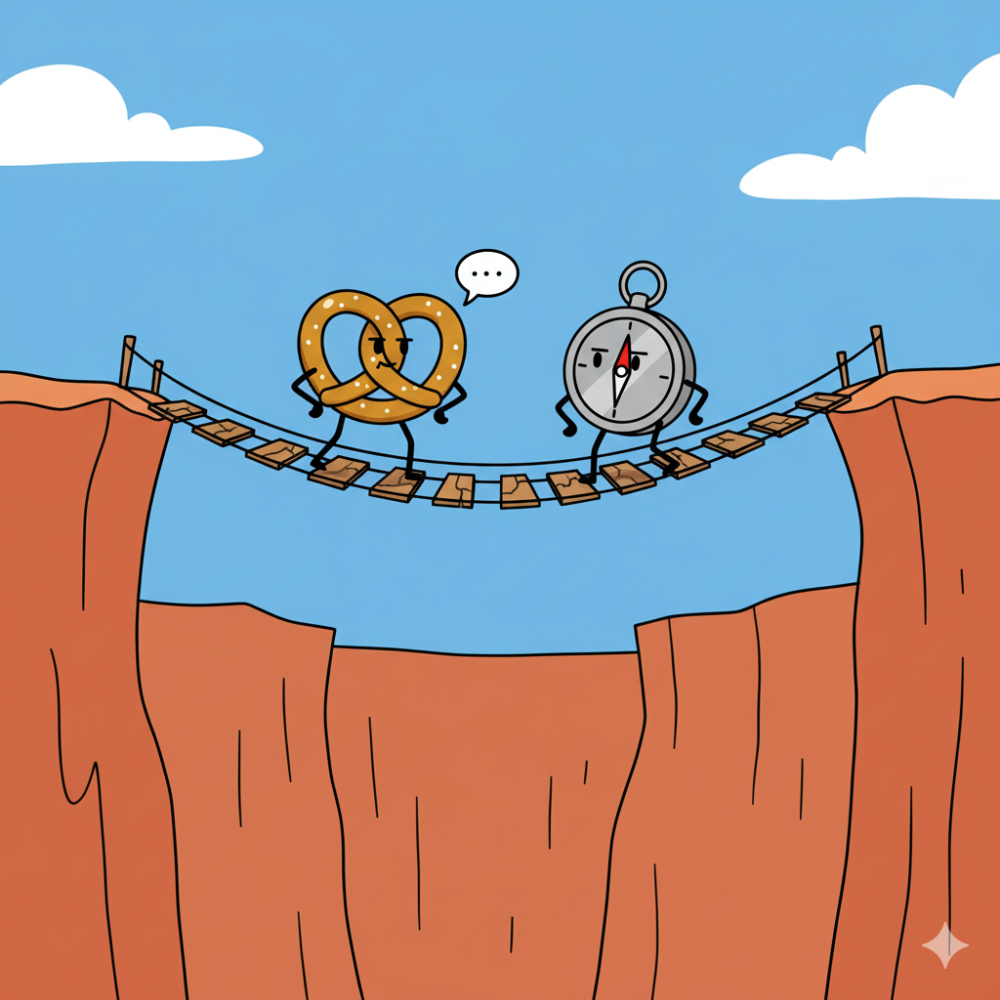
Compass's path led to the deepest part of the gulch — and the longest, most terrifying bridge she'd ever seen. It was made of old planks and fraying rope, stretching across a gap so deep she couldn't see the bottom.
Her needle was spinning. That meant she was scared, and she hated that everyone could tell because her fear was literally displayed on her face.
"You can do this," she told herself. "You always know which way to go. Forward. Just go forward."
"COMPASS! WAIT UP!"
She turned to see Pretzel jogging toward her, out of breath. "I, uh... the right path was a dead end. You were correct. Don't make a big thing about it."
"I wasn't going to."
Pretzel looked at the bridge. Then at Compass's spinning needle. "You're scared."
"Obviously."
"Want me to go first?"
Compass looked at him — this loud, bossy pretzel who never listened to anyone. And here he was, offering to go first on a scary bridge because he could see she was afraid.
"...Yes please," she said quietly.
Pretzel stepped onto the bridge, and it groaned under his weight. They crossed together, one plank at a time. Pretzel talked the entire way — about his plans, his strategies, his opinions on every object show ever made — and for once, Compass didn't mind. The talking helped. By the time they reached the other side, her needle had stopped spinning.
Page 10
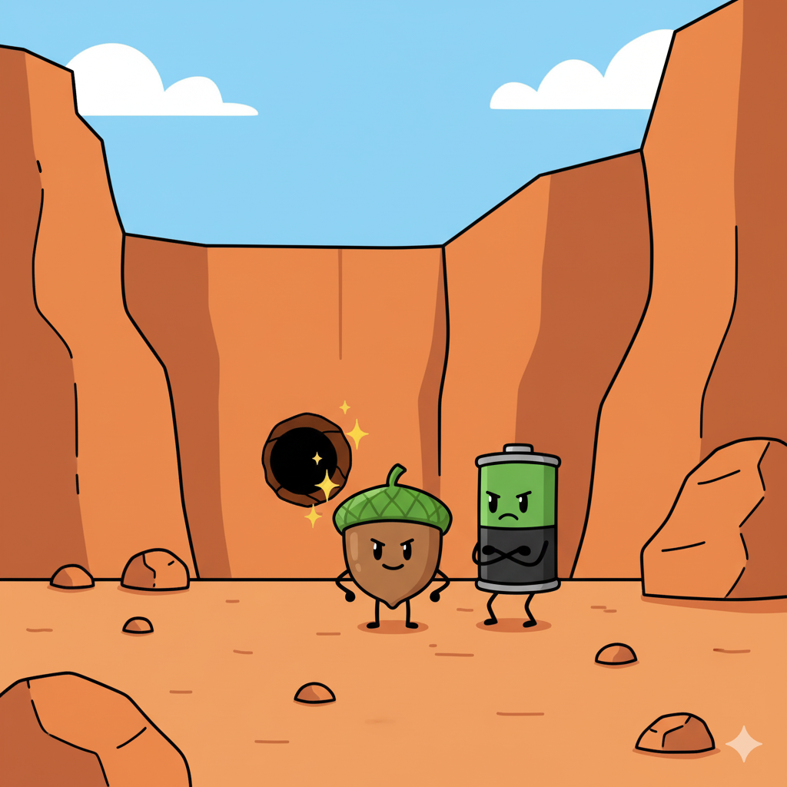
Battery and Acorn had climbed down from the ridge to the canyon floor. Battery's energy was dropping — she could feel it.
"I'm at fifty-two percent," she groaned. "Carrying you up that hill took a lot out of me."
"Sorry," Acorn said, genuinely guilty.
"Don't apologize. I offered."
They wandered along the canyon floor, past strange rock formations and old signs from previous BFDI seasons. One sign read: "EVIL CANYON — BFDIA EPISODE 5." Another just said "YOYLE" with an arrow pointing up.
Acorn stopped. "Battery. Look."
In a crevice between two boulders, almost invisible unless you were tiny enough to be at exactly the right eye level, there was a small hole in the rock wall. And inside that hole, something gleamed gold.
"I can see something. Something GOLD."
Battery crouched down. She couldn't see it — she was too big. The hole was maybe three inches wide. Way too small for anyone to reach into. Anyone except Acorn.
"I can fit," Acorn said, his eyes wide. "I'm the only one small enough."
"You sure? We don't know what's in there."
Acorn puffed up his chest — which made him approximately one centimeter wider. "I've been the smallest one my entire life. Everyone's always told me I'm too little. Too weak. Too easy to overlook. But RIGHT NOW, being small is the only thing that's going to win this challenge. So yeah. I'm sure."
Page 11
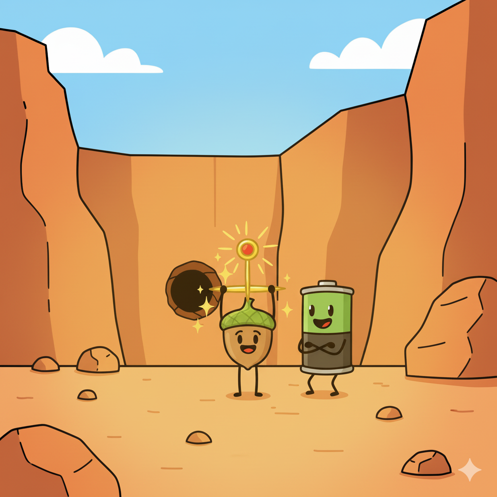
Acorn squeezed into the hole. It was tight — even for him — and completely dark. He could feel cool rock on all sides. His cap scraped the ceiling.
"You okay in there?"Battery's voice echoed from behind him.
"Yeah! It's tight but I'm moving!" Acorn called back. He inched forward, using his tiny arms to pull himself along.
The golden gleam got brighter. He was close. His hand reached out and touched something smooth and metallic and warm. He grabbed it.
It was the Golden Pin. The REAL one — not a thumbtack, not a decoy. It was beautiful, shaped like Pin from the original BFDI, but made entirely of gold and slightly warm to the touch, as if it had been waiting for someone to find it.
"I GOT IT!" Acorn screamed. "I GOT THE PIN! I GOT IT, BATTERY, I GOT IT!"
"THEN GET OUT OF THERE!"
Acorn shimmied backward out of the hole, clutching the Golden Pin to his chest. When he emerged, Battery was waiting with the widest smile he'd ever seen on her usually grumpy face.
"You did it," she said. "The smallest contestant in the competition just found the one thing nobody else could reach."
Acorn held the pin above his head. It glinted in the canyon light. He was shaking — not from fear this time, but from something he'd never quite felt before. Being proud of exactly who he was.
Page 12
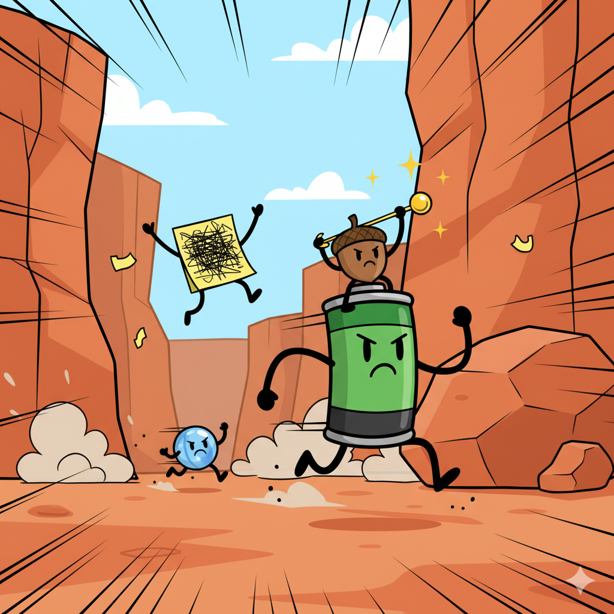
"We need to get this back to the Announcer,"Battery said. "And fast — the others might have found it too."
"There was only one real pin,"Acorn said. "I'm sure of it. But they don't KNOW that. They'll still be searching."
Battery scooped Acorn up and put him on her shoulder. "Hold on tight, small fry. I've got about forty percent left, and I'm using every bit of it."
Battery CHARGED. She ran through the canyon at full speed, her feet pounding the dusty ground. Acorn clung to her top, the Golden Pin gripped tightly in his hands, wind rushing past his cap.
They rounded a corner and nearly collided with Marble and Sticky Note, who were climbing out of the mud pit.
"IS THAT THE PIN?!" Sticky Note shrieked.
"YEP!" Acorn yelled as Battery blew past them.
"FOLLOW THEM!" Marble shouted, and the two of them took off running — Marble rolling at top speed, Sticky Note flapping in the wind and sticking to every surface he passed.
Page 13
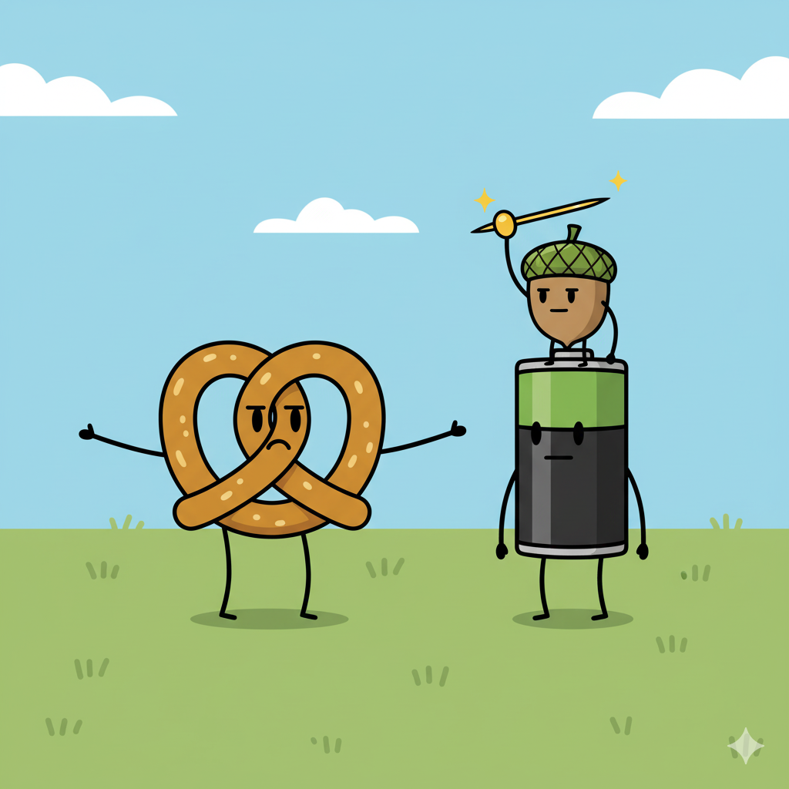
Battery and Acorn burst out of the canyon and into the meadow. The Announcer was visible in the distance — just a few hundred yards away.
But standing in their path was Pretzel.
"Hand it over," Pretzel said. He'd circled back and was blocking the trail, arms spread wide. "I'm the leader. I should be the one to deliver it."
"And YOU didn't find it either. You just carried him. We all contributed. But I organized the teams. Without MY plan, nobody would have gone to the left ridge."
"YOUR plan sent you to a dead end!"
Pretzel flinched. That one stung. But he held his ground.
Acorn looked at Pretzel from Battery's shoulder. For a moment, the old Acorn would have been intimidated. Pretzel was bigger, louder, more confident. But the old Acorn hadn't crawled through a dark hole in a rock wall to grab a golden pin with his bare hands.
"No," Acorn said calmly. "I found it. I'm delivering it. You can come with us if you want — but the pin stays with me."
Pretzel stared at him for a long, hard moment. Then, slowly, he stepped aside.
"...Fine. But I'm walking in front. For appearances."
Page 14
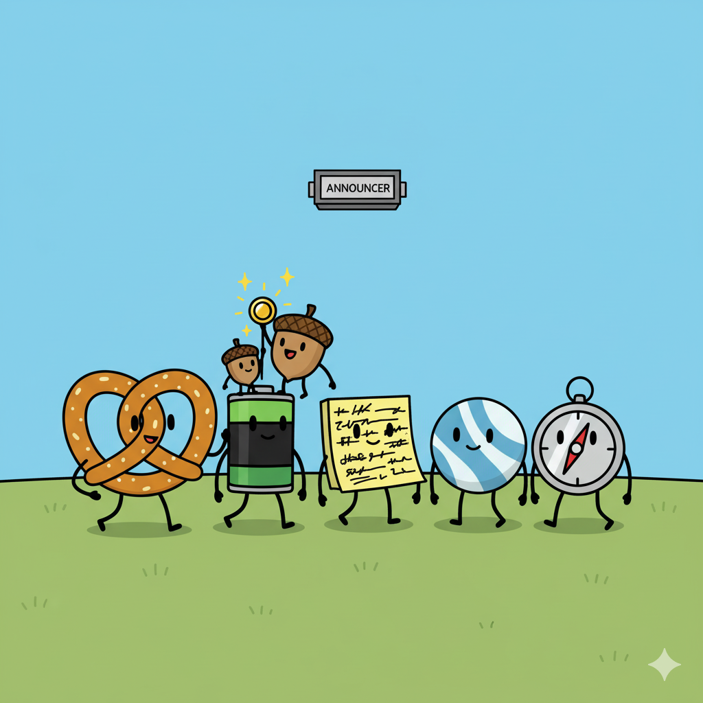
Compass came running up from behind, out of breath. "Did someone find it? My needle went CRAZY a few minutes ago — spinning in circles. That only happens when something important is nearby."
"Acorn found it,"Marble said, rolling up beside her. "In a hole in the canyon wall. Nobody else could fit."
Compass looked at Acorn — really looked at him. Then she smiled the warmest smile any of them had seen from her. "Of course. The smallest contestant found the thing hidden in the smallest space. That's... actually perfect."
"Can we PLEASE keep moving?"Battery said. "I'm at twenty-nine percent."
The six of them walked together across the meadow — not racing anymore, not competing. Pretzel was technically in front (for appearances), but Acorn was on Battery's shoulder holding the pin high, and everyone knew who had actually won.
Sticky Note was documenting everything. He'd written across his entire front: ACORN = HERO. CAVES = TRAP. PRETZEL = WRONG. BATTERY = FAST. MARBLE = SMART. COMPASS = BRAVE. STICKY NOTE = ALSO THERE.
"That's very accurate," Marble said.
Page 15
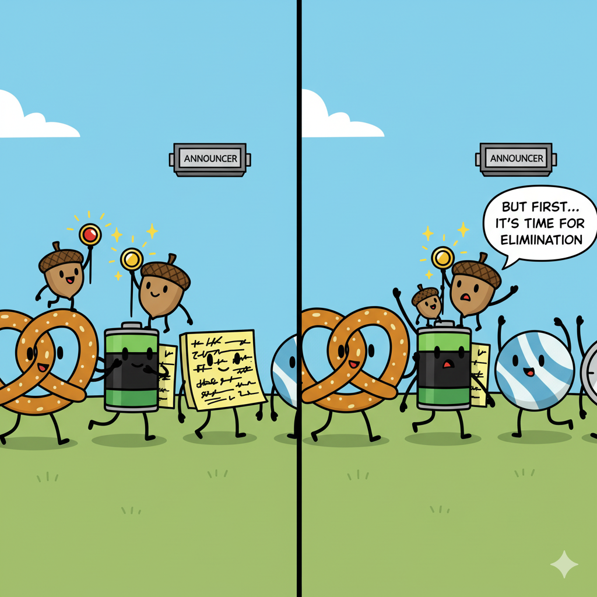
They reached the Announcer, who hadn't moved an inch since they left.
"You have returned. I see one of you has the Golden Pin."
Acorn climbed down from Battery's shoulder and walked up to the Announcer. The pin was almost as big as he was. He held it out with both hands.
"I found it," Acorn said. "It was hidden in a crack in the canyon wall. Nobody else could reach it. But I could. Because I'm small."
The Announcer took the pin. "Acorn wins immunity. Acorn cannot be eliminated."
The group cheered — all of them, even Pretzel. Acorn was lifted onto Pretzel's twisted form like a trophy, and Sticky Note stuck himself to Battery's side in an aggressive celebratory hug.
"However," the Announcer continued, and everyone went quiet. "The rest of you must now vote. One contestant will be eliminated."
The celebration died instantly.
Page 16
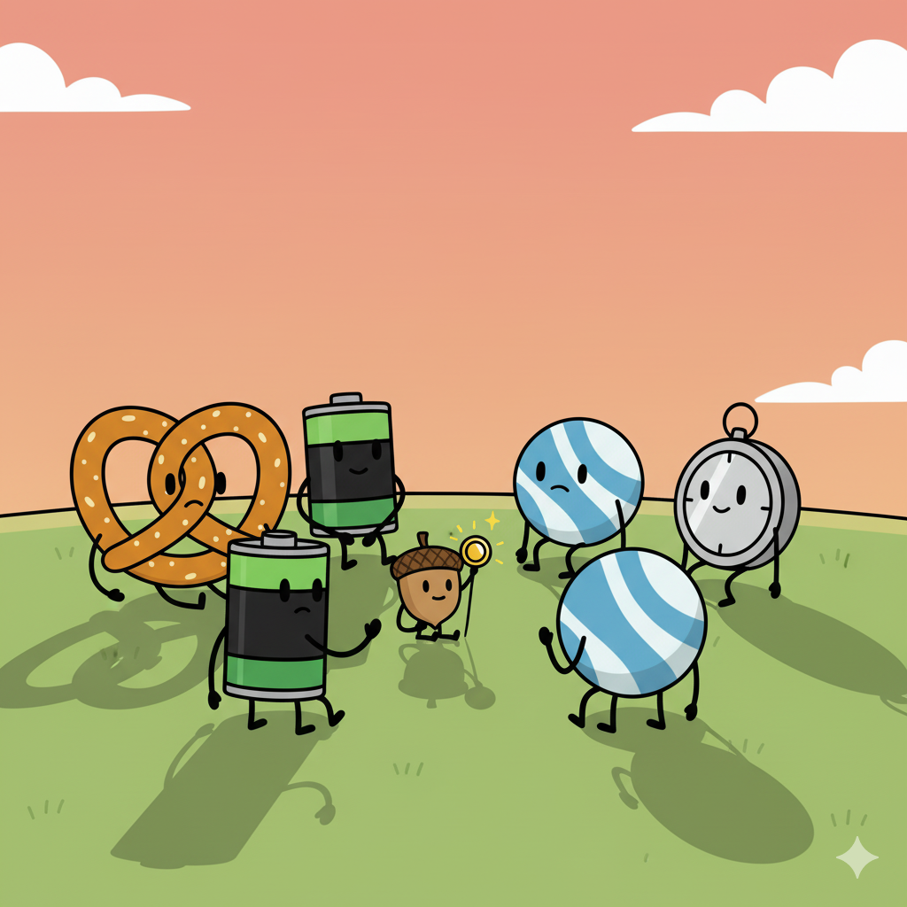
The six contestants sat in a circle as the sun began to set. The sky turned orange and pink, and the shadows grew long across the grass.
"So... who do we vote for?"Sticky Note asked nervously. He'd written "I DON'T WANT TO GO HOME" on himself in big letters.
Nobody spoke. Finally, Pretzel cleared his throat. "I'll say it, since nobody else will. I messed up today. I ignored Compass, took a wrong turn, and then tried to steal the pin from Acorn. If anyone deserves votes... it's me."
The group stared at him in shock.
Pretzel continued. "But I also organized the teams. And I went first on that bridge. And I stepped aside when Acorn stood up to me. So I guess what I'm saying is — I'm not perfect. But I'm trying. And I'd like the chance to try again."
Compass spoke next. "I was too afraid to lead. I always know the way, but I never take the first step."
"I need to be louder,"Marble said. "I see things nobody else sees, but I don't speak up fast enough."
"I need to think before I grab shiny things,"Sticky Note admitted.
Battery sighed. "And I need to stop pretending I don't care about anyone."
Acorn looked around at his five new friends. "I'm not using my immunity to protect myself. I'm using it to say this: nobody here should go home. We're all better together than we are alone. Can we just... tell the Announcer that?"
Page 17
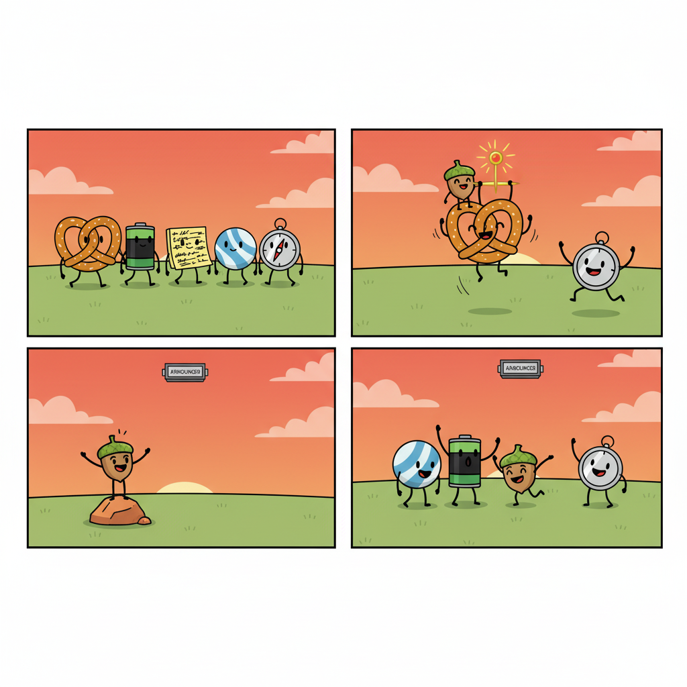
Acorn walked up to the Announcer. "We've decided. We don't want to eliminate anyone. We all made mistakes today, but we all helped each other too. Can you just... not eliminate someone this time?"
The Announcer was quiet for a very long time.
"That is not how the game works."
"Maybe it SHOULD be," Acorn said.
Another long pause. The other five contestants held their breath.
"...Your request has been noted. In the interest of... drama... I will allow it. This time. No elimination."
"WAIT REALLY?!"Sticky Note exploded.
"But this is the ONLY time. Next challenge, someone goes home. Are we clear?"
"YES!" all six of them shouted at once.
Pretzel threw his arms up. "I TOLD you my plan would work! The plan of not having a plan! CLASSIC Pretzel!"
"That is absolutely not what happened,"Battery said. But she was laughing.
Page 18
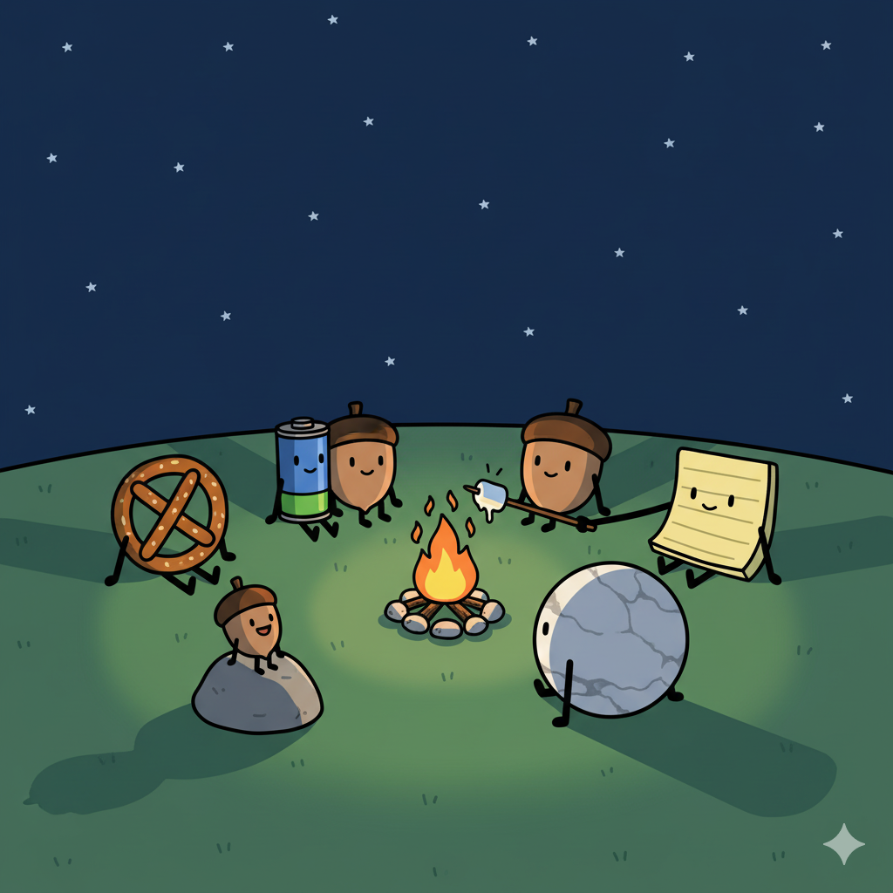
That night, the six contestants sat around a campfire (which Pretzel had to sit far away from, for obvious reasons).
"So what do we think the next challenge will be?"Compass asked, her needle pointing lazily north in the calm night air.
"Something with water, probably,"Marble guessed. "They always do a water challenge."
"I CANNOT do water,"Sticky Note said gravely. "I will dissolve. That is not a joke. I will LITERALLY dissolve."
"We'll figure it out,"Battery said. Then she caught herself being nice and quickly added, "I mean, whatever. I don't care."
"You care SO MUCH,"Acorn grinned.
"Shut up, small fry."
"You carried me on your shoulder for an hour."
"I WAS BEING STRATEGIC."
Everyone laughed. The fire crackled. Stars came out over Goiky, one by one, like someone was turning on fairy lights across the sky.
Pretzel looked around at the group — at Compass, who was brave even when she was scared. At Battery, who was kind even when she pretended not to be. At Marble, who saw everything. At Sticky Note, who stuck to people because he genuinely loved being close to them. And at Acorn, the smallest contestant who had done the biggest thing today.
"Hey," Pretzel said quietly. "For what it's worth... I'm glad I got assigned to this group."
"Us too," Compass said. And she meant it.
Page 19
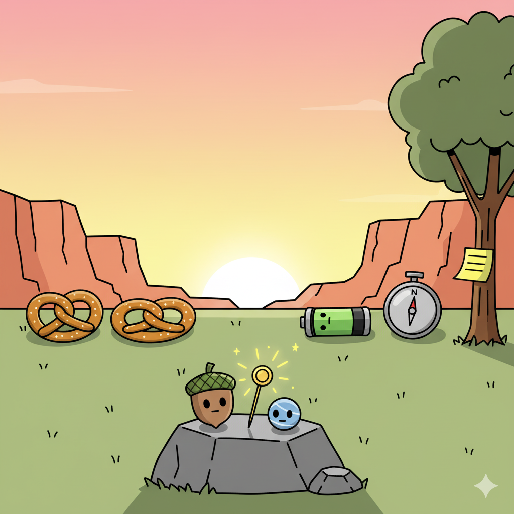
The sun rose over Goiky, painting the sky in soft yellows and pinks. One by one, the contestants woke up.
Acorn woke first — he always did. Small creatures wake early. He sat on his rock and watched the sunrise, the Golden Pin resting beside him. He thought about yesterday — crawling through that dark hole, standing up to Pretzel, asking the Announcer to spare everyone.
A week ago, he was just a tiny acorn who dreamed of being big. Now he realized that being big wasn't about size at all. It was about what you were willing to do when the moment came.
Marble woke next and rolled over to sit beside him. "You're up early."
"I was thinking."
"About what?"
"About how yesterday was the best day of my life. And also the scariest." He looked at her. "Do you think we can actually win this whole thing?"
Marble was quiet for a moment, watching the sunrise. Then she said, "I think we already did. Yesterday. Not the challenge — the other thing. The thing where six strangers became a team."
"That's really poetic, Marble."
"I know. Don't tell anyone. I have a reputation for being quiet."
They sat together in comfortable silence as the sun climbed higher and the others began to stir. Another day in Goiky. Another challenge ahead. But this time, they wouldn't face it alone.
Page 20
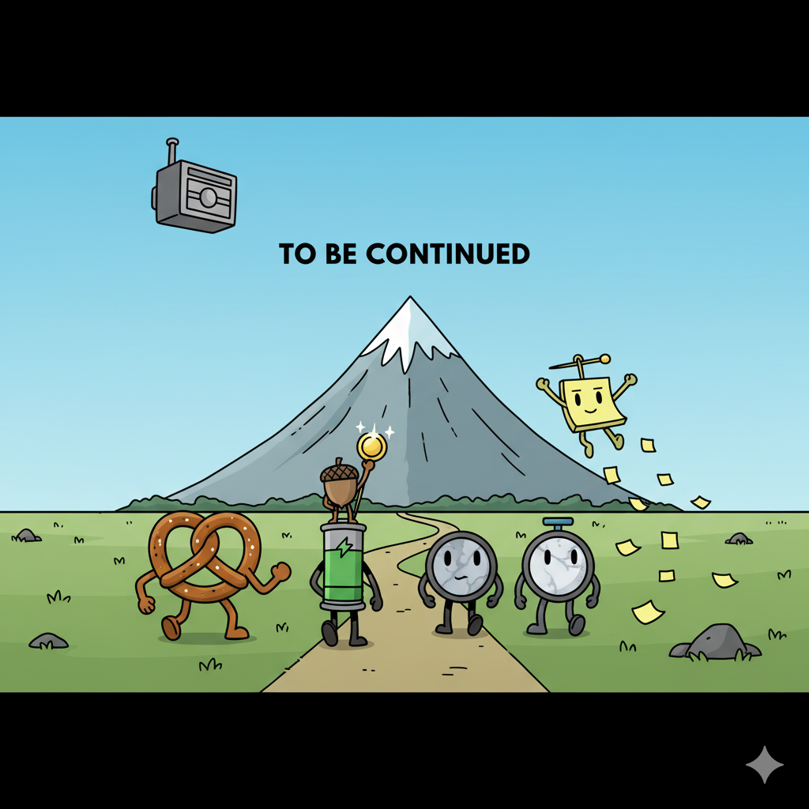
The Announcer dropped from the sky. Again.
"Good morning, contestants. I hope you enjoyed your rest. Because today's challenge is going to be much, much harder."
"Harder than a canyon full of traps and fake pins?"Pretzel asked.
"Yes."
"Harder than a scary bridge over a bottomless pit?"Compass asked.
"Yes."
"Harder than squeezing through a tiny hole in a rock?"Acorn asked.
"...Yes."
Sticky Note raised his hand. "Does it involve water? Because I have CONCERNS—"
"Today's challenge," the Announcer interrupted, "will be revealed at the GOIKY SUMMIT. Be there in one hour. And this time..." The Announcer paused for effect. "...there WILL be an elimination."
The six contestants looked at each other. Pretzel cracked his knuckles. Battery checked her charge level (ninety-eight percent — full night's rest). Compass's needle pointed toward the summit, steady as a rock. Marble narrowed her eyes. Sticky Note scribbled frantically on himself. And Acorn — the smallest one — stood as tall as he could and smiled.
"Let's do this," he said.
And together, all six of them walked toward whatever came next.
🌰✨
To Be Continued...
Pretzel, Marble, Sticky Note, Battery, Acorn & Compass will return in their next adventure.
The Goiky Summit awaits.
 Fan Cannon|BFDI Universe|Storybooks|Story #4
Fan Cannon|BFDI Universe|Storybooks|Story #4